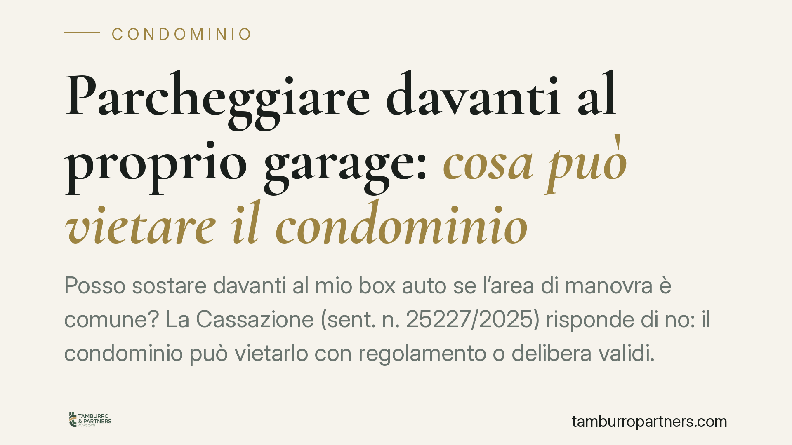

Parcheggiare davanti al proprio garage: cosa può vietare il condominio
Posso sostare davanti al mio box auto se l'area di manovra è comune? La Cassazione (sent. n. 25227/2025) risponde di no: il condominio può vietarlo con regolamento o delibera validi. Non conta l'assenza di disagio concreto per gli altri, ma il loro pari uso potenziale dello spazio comune. Un chiarimento che incide sulla gestione quotidiana degli spazi condominiali.

Il caso: sosta temporanea e area comune
Un condomino sostava con l'auto davanti al proprio garage, sullo spazio di manovra comune. La difesa era intuitiva: fermandosi davanti al *proprio* box, non arrecava disturbo a nessuno. La sosta era breve, funzionale, apparentemente innocua.
La Cassazione, con la sentenza n. 25227/2025, ha respinto questa impostazione. Il punto non è il disagio concreto, ma il diritto di ciascun condomino a utilizzare lo spazio comune. E questo diritto non può essere compresso da un uso esclusivo di fatto, anche se temporaneo.
Inquadramento normativo
La chiave è l'art. 1102 del codice civile. La norma consente a ogni condomino di servirsi della cosa comune, ma a due condizioni precise: non alterarne la destinazione e non impedire agli altri partecipanti di farne pari uso.
Il concetto decisivo è quello di pari uso potenziale. Non rileva se, in un dato momento, nessun altro condomino stia effettivamente usando quello spazio. Rileva che tutti abbiano la *possibilità astratta* di usarlo nelle stesse condizioni. Chi sosta stabilmente davanti al proprio garage, anche per poco, sottrae quell'area alla disponibilità collettiva.
A questo si aggiunge l'art. 1138 cod. civ., che disciplina il regolamento di condominio. Il regolamento e le delibere assembleari possono dettare regole sull'uso delle parti comuni, inclusi i divieti di sosta, purché restino nei limiti di legge e non incidano sui diritti di proprietà esclusiva dei singoli.
Perché il divieto è legittimo
La sosta davanti al garage, pur breve, realizza un uso dello spazio comune incompatibile con il pari diritto degli altri. Se tutti i condomini pretendessero di fare lo stesso davanti ai rispettivi box, l'area di manovra diventerebbe inutilizzabile.
Per questo il condominio può intervenire. Due le vie:
- un divieto previsto dal regolamento, specie se di natura contrattuale (cioè accettato da tutti i condomini all'atto di acquisto);
- una delibera dell'assemblea validamente approvata, che disciplini l'uso dello spazio comune.
In entrambi i casi, il divieto non richiede la prova di un danno. È sufficiente che la sosta comprima il pari uso potenziale.
Implicazioni pratiche
Per il singolo condomino il messaggio è chiaro: la proprietà esclusiva del garage non si estende all'area comune antistante. Il diritto di accesso al box non autorizza a occupare lo spazio di manovra con la sosta, nemmeno per pochi minuti, se un divieto valido lo esclude.
Per l'amministratore e per l'assemblea, la sentenza conferma un potere di regolamentazione ampio. Le delibere che vietano la sosta nelle aree comuni di manovra reggono al vaglio giudiziale, purché approvate con le maggioranze corrette e verbalizzate in modo chiaro.
Attenzione però alla distinzione. Se l'area davanti al garage è di proprietà esclusiva del condomino, il discorso cambia radicalmente: il condominio non può vietare la sosta su un bene privato. Prima di contestare o difendere un divieto, va quindi verificata con precisione la natura dell'area, consultando i titoli di acquisto e le planimetrie.
Cosa fare in concreto
- Verificate la natura dell'area davanti al garage: controllate atto di acquisto, tabelle millesimali e planimetrie per capire se è comune o di proprietà esclusiva.
- Leggete il regolamento condominiale, distinguendo le clausole contrattuali (vincolanti per tutti) da quelle meramente assembleari.
- Controllate le delibere che disciplinano la sosta: verificate quorum, oggetto all'ordine del giorno e corretta verbalizzazione.
- Documentate eventuali contestazioni con comunicazioni scritte all'amministratore, evitando reazioni di fatto.
- Richiedete una verifica tecnico-giuridica prima di impugnare una delibera o di contestare una sanzione: i margini di manovra dipendono dai titoli specifici.
Disclaimer
Contributo informativo a cura di Tamburro & Partners - Avv. Giuseppe Tamburro. Non costituisce parere legale.
Ogni condominio ha una storia a sé.
Se gestisci un'amministrazione e vuoi un confronto su una specifica questione condominiale, scrivi allo studio. Ti rispondiamo entro un giorno lavorativo.